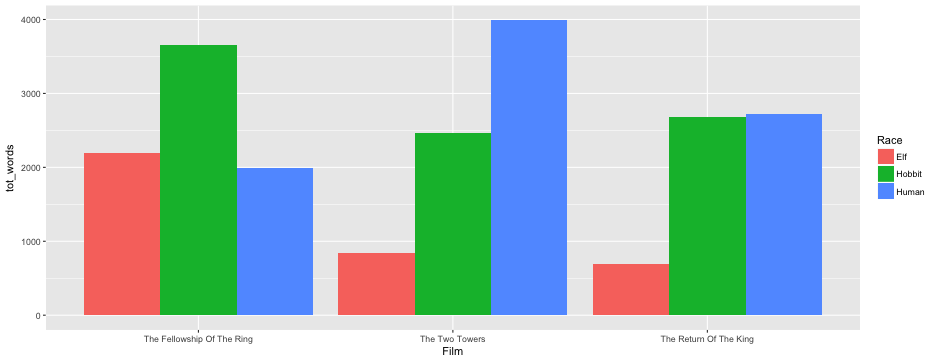
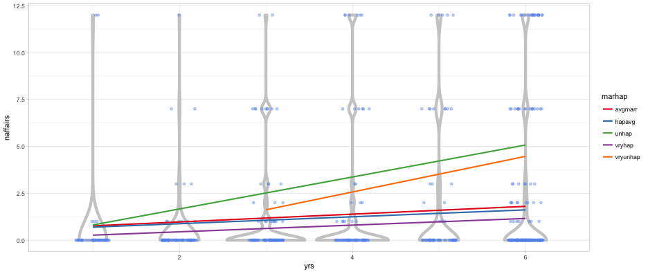

Agenda
- Review and discuss tidy data in more depth
- Practice tidying data
Reasons to prefer tidy data
- More efficient storage and retrieval
- More scalable
- The tidyverse of tools will work much more efficiently
Read in the hiv data
- Make some manipulations (just dplyr variety) to make the data look like the below.
- Are these data tidy?
- How would you add a new variable - say, percent aids?
- Discuss how you would transform these data, if at all.
## # A tibble: 3 x 5
## country x1979 x1989 x1999 x2009
## <chr> <dbl> <chr> <dbl> <dbl>
## 1 France NA <NA> 0.3 0.4
## 2 South Africa NA <NA> 14.8 17.2
## 3 United States 0.03176408 <NA> 0.5 0.6
How do we tidy these data?
- Use the
gather()function from tidyr
hiv_tidy <- hiv %>%
gather(year, percentage, -1)
hiv_tidy
## # A tibble: 12 x 3
## country year percentage
## <chr> <chr> <chr>
## 1 France x1979 <NA>
## 2 South Africa x1979 <NA>
## 3 United States x1979 0.031764078
## 4 France x1989 <NA>
## 5 South Africa x1989 <NA>
## 6 United States x1989 <NA>
## 7 France x1999 0.3
## 8 South Africa x1999 14.8
## 9 United States x1999 0.5
## 10 France x2009 0.4
## 11 South Africa x2009 17.2
## 12 United States x2009 0.6
How does the gather function work?

Pop quiz
- What would have happened if I didn’t use
-1to define the columns to gather?
Country is part of the gather
hiv %>%
gather(year, percentage)
## # A tibble: 15 x 2
## year percentage
## <chr> <chr>
## 1 country France
## 2 country South Africa
## 3 country United States
## 4 x1979 <NA>
## 5 x1979 <NA>
## 6 x1979 0.031764078
## 7 x1989 <NA>
## 8 x1989 <NA>
## 9 x1989 <NA>
## 10 x1999 0.3
## 11 x1999 14.8
## 12 x1999 0.5
## 13 x2009 0.4
## 14 x2009 17.2
## 15 x2009 0.6
Declaring columns to gather
- I could have declared the columns to gather other ways. The important part is just being clear which columns should be part of the gather. All of the below are equivalent
hiv %>%
gather(year, percentage, -1)
hiv %>%
gather(year, percentage, x1979, x1989, x1999, x2009)
hiv %>%
gather(year, percentage, x1979:x2009)
hiv %>%
gather(year, percentage, -country)
Lord of the Rings
Example from Jenny Bryan.
See https://github.com/datacarpentry/archive-datacarpentry/tree/master/lessons/tidy-data
Untidy tables
Fellowship
| Race | Female | Male |
|---|---|---|
| Elf | 1229 | 971 |
| Hobbit | 14 | 3644 |
| Human | 0 | 1995 |
Two Towers
| Race | Female | Male |
|---|---|---|
| Elf | 331 | 513 |
| Hobbit | 0 | 2463 |
| Human | 401 | 3589 |
Return of the King
| Race | Female | Male |
|---|---|---|
| Elf | 183 | 510 |
| Hobbit | 2 | 2673 |
| Human | 268 | 2459 |
- This is a great format for seeing the data
- Hard to pull information
- What’s the total number of words spoken by male hobbits?
- Does one Race dominate? Does dominant Race differ by movie?
- Could you address these same questions with 27 movies? (one table per movie)
Tidy representation
lotr_tidy
## Film Race Gender Words
## 1 The Fellowship Of The Ring Elf Female 1229
## 2 The Fellowship Of The Ring Elf Male 971
## 3 The Fellowship Of The Ring Hobbit Female 14
## 4 The Fellowship Of The Ring Hobbit Male 3644
## 5 The Fellowship Of The Ring Human Female 0
## 6 The Fellowship Of The Ring Human Male 1995
## 7 The Two Towers Elf Female 331
## 8 The Two Towers Elf Male 513
## 9 The Two Towers Hobbit Female 0
## 10 The Two Towers Hobbit Male 2463
## 11 The Two Towers Human Female 401
## 12 The Two Towers Human Male 3589
## 13 The Return Of The King Elf Female 183
## 14 The Return Of The King Elf Male 510
## 15 The Return Of The King Hobbit Female 2
## 16 The Return Of The King Hobbit Male 2673
## 17 The Return Of The King Human Female 268
## 18 The Return Of The King Human Male 2459
Much simpler to answer the questions on the previous slide. Let’s do so. First, read in the “lotr_tidy.csv” file, then try to address the questions on the previous slide
What’s the total number of words spoken by male hobbits?
library(tidyverse)
lotr_tidy %>%
filter(Gender == "Male" & Race == "Hobbit") %>%
summarize(tot_words = sum(Words))
## tot_words
## 1 8780
Does a certain Race Dominate a movie?
lotr_tidy %>%
group_by(Race) %>%
summarize(tot_words = sum(Words))
## # A tibble: 3 x 2
## Race tot_words
## <fctr> <dbl>
## 1 Elf 3737
## 2 Hobbit 8796
## 3 Human 8712
Does the dominant Race differ by movie?
lotr_tidy %>%
group_by(Film, Race) %>%
summarize(tot_words = sum(Words))
## # A tibble: 9 x 3
## # Groups: Film [?]
## Film Race tot_words
## <fctr> <fctr> <dbl>
## 1 The Fellowship Of The Ring Elf 2200
## 2 The Fellowship Of The Ring Hobbit 3658
## 3 The Fellowship Of The Ring Human 1995
## 4 The Two Towers Elf 844
## 5 The Two Towers Hobbit 2463
## 6 The Two Towers Human 3990
## 7 The Return Of The King Elf 693
## 8 The Return Of The King Hobbit 2675
## 9 The Return Of The King Human 2727
Plot answers to this second set of questions
pd <- lotr_tidy %>%
group_by(Film, Race) %>%
summarize(tot_words = sum(Words))
ggplot(pd, aes(Film, tot_words, fill = Race)) +
geom_bar(stat = "identity", position = "dodge")

Let’s go back a bit…
Import each table separately, and staple them together with bind_rows
library(rio)
fellowship <- import("../../data/fellowship.csv", setclass = "tbl_df")
ttowers <- import("../../data/two_towers.csv", setclass = "tbl_df")
rking <- import("../../data/return_king.csv", setclass = "tbl_df")
lotr <- bind_rows(fellowship, ttowers, rking)
lotr
## # A tibble: 9 x 3
## Race Female Male
## <chr> <int> <int>
## 1 Elf 1229 971
## 2 Hobbit 14 3644
## 3 Human 0 1995
## 4 Elf 331 513
## 5 Hobbit 0 2463
## 6 Human 401 3589
## 7 Elf 183 510
## 8 Hobbit 2 2673
## 9 Human 268 2459
Are these data tidy? What do we need to do?
gather
lotr %>%
gather(gender, word_count, -1)
## # A tibble: 18 x 3
## Race gender word_count
## <chr> <chr> <int>
## 1 Elf Female 1229
## 2 Hobbit Female 14
## 3 Human Female 0
## 4 Elf Female 331
## 5 Hobbit Female 0
## 6 Human Female 401
## 7 Elf Female 183
## 8 Hobbit Female 2
## 9 Human Female 268
## 10 Elf Male 971
## 11 Hobbit Male 3644
## 12 Human Male 1995
## 13 Elf Male 513
## 14 Hobbit Male 2463
## 15 Human Male 3589
## 16 Elf Male 510
## 17 Hobbit Male 2673
## 18 Human Male 2459
Challenge
- We’ve lost the film that these data come from. Try to recreate the dataset with a film variable.
fellowship <- mutate(fellowship, film = "Fellowship")
ttowers <- mutate(ttowers, film = "Two Towers")
rking <- mutate(rking, film = "Return King")
lotr <- bind_rows(fellowship, ttowers, rking)
lotr <- lotr %>%
gather(gender, word_count, Female:Male)
lotr
## # A tibble: 18 x 4
## Race film gender word_count
## <chr> <chr> <chr> <int>
## 1 Elf Fellowship Female 1229
## 2 Hobbit Fellowship Female 14
## 3 Human Fellowship Female 0
## 4 Elf Two Towers Female 331
## 5 Hobbit Two Towers Female 0
## 6 Human Two Towers Female 401
## 7 Elf Return King Female 183
## 8 Hobbit Return King Female 2
## 9 Human Return King Female 268
## 10 Elf Fellowship Male 971
## 11 Hobbit Fellowship Male 3644
## 12 Human Fellowship Male 1995
## 13 Elf Two Towers Male 513
## 14 Hobbit Two Towers Male 2463
## 15 Human Two Towers Male 3589
## 16 Elf Return King Male 510
## 17 Hobbit Return King Male 2673
## 18 Human Return King Male 2459
Alternative method
- The
bind_rowsfunction includes an optional.idargument. Try it!
fellowship <- import("../../data/fellowship.csv", setclass = "tbl_df")
ttowers <- import("../../data/two_towers.csv", setclass = "tbl_df")
rking <- import("../../data/return_king.csv", setclass = "tbl_df")
lotr2 <- bind_rows(fellowship, ttowers, rking, .id = "dataset")
lotr2
## # A tibble: 9 x 4
## dataset Race Female Male
## <chr> <chr> <int> <int>
## 1 1 Elf 1229 971
## 2 1 Hobbit 14 3644
## 3 1 Human 0 1995
## 4 2 Elf 331 513
## 5 2 Hobbit 0 2463
## 6 2 Human 401 3589
## 7 3 Elf 183 510
## 8 3 Hobbit 2 2673
## 9 3 Human 268 2459
Recode dataset to correspond
lotr2 %>%
mutate(dataset = ifelse(dataset == 1, "fellowship",
ifelse(dataset == 2, "two towers",
"return of the king")))
## # A tibble: 9 x 4
## dataset Race Female Male
## <chr> <chr> <int> <int>
## 1 fellowship Elf 1229 971
## 2 fellowship Hobbit 14 3644
## 3 fellowship Human 0 1995
## 4 two towers Elf 331 513
## 5 two towers Hobbit 0 2463
## 6 two towers Human 401 3589
## 7 return of the king Elf 183 510
## 8 return of the king Hobbit 2 2673
## 9 return of the king Human 268 2459
dplyr version
- I personally prefer
base::ifelsetodplyr::recode, but I’d be remiss if I didn’t at least mention it
lotr2 %>%
mutate(dataset = recode(dataset,
"1" = "fellowship",
"2" = "two towers",
"3" = "return of the king"))
## # A tibble: 9 x 4
## dataset Race Female Male
## <chr> <chr> <int> <int>
## 1 fellowship Elf 1229 971
## 2 fellowship Hobbit 14 3644
## 3 fellowship Human 0 1995
## 4 two towers Elf 331 513
## 5 two towers Hobbit 0 2463
## 6 two towers Human 401 3589
## 7 return of the king Elf 183 510
## 8 return of the king Hobbit 2 2673
## 9 return of the king Human 268 2459
Need a new format?
Imagine we needed a variable for each gender/Race combination (maybe for a table in a paper). We can produce this by unite()ing the two variables together and then spreading based on that variable.
lotr %>%
unite(race_gen, Race, gender) %>%
spread(race_gen, word_count)
## # A tibble: 3 x 7
## film Elf_Female Elf_Male Hobbit_Female Hobbit_Male Human_Female
## * <chr> <int> <int> <int> <int> <int>
## 1 Fellowship 1229 971 14 3644 0
## 2 Return King 183 510 2 2673 268
## 3 Two Towers 331 513 0 2463 401
## # ... with 1 more variables: Human_Male <int>
A few more examples (follow along)
- Load the votes.repub.csv dataset.
votes <- import("../../data/votes.repub.csv", setclass = "tbl_df")
votes
## # A tibble: 50 x 32
## V1 X1856 X1860 X1864 X1868 X1872 X1876 X1880 X1884 X1888 X1892
## <chr> <dbl> <dbl> <dbl> <dbl> <dbl> <dbl> <dbl> <dbl> <dbl> <dbl>
## 1 Alabama NA NA NA 51.44 53.19 40.02 36.98 38.44 32.28 3.95
## 2 Alaska NA NA NA NA NA NA NA NA NA NA
## 3 Arizona NA NA NA NA NA NA NA NA NA NA
## 4 Arkansas NA NA NA 53.73 52.17 39.88 39.55 40.50 38.07 32.01
## 5 California 18.77 32.96 58.63 50.24 56.38 50.88 48.92 52.08 49.95 43.76
## 6 Colorado NA NA NA NA NA NA 51.28 54.39 55.31 41.13
## 7 Connecticut 53.18 53.86 51.38 51.54 52.25 48.34 50.52 48.01 48.44 46.80
## 8 Delaware 2.11 23.71 48.20 40.98 50.99 44.55 47.86 42.75 43.55 48.55
## 9 Florida NA NA NA NA 53.52 50.99 45.83 46.82 39.94 NA
## 10 Georgia NA NA NA 35.72 43.77 27.94 34.33 33.84 28.33 21.80
## # ... with 40 more rows, and 21 more variables: X1896 <dbl>, X1900 <dbl>,
## # X1904 <dbl>, X1908 <dbl>, X1912 <dbl>, X1916 <dbl>, X1920 <dbl>,
## # X1924 <dbl>, X1928 <dbl>, X1932 <dbl>, X1936 <dbl>, X1940 <dbl>,
## # X1944 <dbl>, X1948 <dbl>, X1952 <dbl>, X1956 <dbl>, X1960 <dbl>,
## # X1964 <dbl>, X1968 <dbl>, X1972 <dbl>, X1976 <dbl>
Discuss with neighbor
- What’s the first step to tidy these data?
- Second?
Step 1: Name state
- dplyr syntax
votes <- votes %>%
rename(state = V1)
- I actually prefer base syntax for renaming, but it may be slightly less clear
names(votes)[1] <- "state"
Step 2: gather()
votes %>%
gather(year, approval_rating, -1)
## # A tibble: 1,550 x 3
## state year approval_rating
## <chr> <chr> <dbl>
## 1 Alabama X1856 NA
## 2 Alaska X1856 NA
## 3 Arizona X1856 NA
## 4 Arkansas X1856 NA
## 5 California X1856 18.77
## 6 Colorado X1856 NA
## 7 Connecticut X1856 53.18
## 8 Delaware X1856 2.11
## 9 Florida X1856 NA
## 10 Georgia X1856 NA
## # ... with 1,540 more rows
Clean up some
votes_tidy <- votes %>%
gather(year, approval_rating, -1) %>%
mutate(year = parse_number(year))
votes_tidy
## # A tibble: 1,550 x 3
## state year approval_rating
## <chr> <dbl> <dbl>
## 1 Alabama 1856 NA
## 2 Alaska 1856 NA
## 3 Arizona 1856 NA
## 4 Arkansas 1856 NA
## 5 California 1856 18.77
## 6 Colorado 1856 NA
## 7 Connecticut 1856 53.18
## 8 Delaware 1856 2.11
## 9 Florida 1856 NA
## 10 Georgia 1856 NA
## # ... with 1,540 more rows
Exploratory plot
- Can you plot approval ratings by year for the west coast (California, Oregon, and Washington)?
- What do you observe?
Plot
pd <- votes_tidy %>%
filter(state == "California" |
state == "Oregon" |
state == "Washington")
theme_set(theme_light())
ggplot(pd, aes(year, approval_rating, color = state)) +
geom_line()

More complex
- Load the affairs data
- Discuss with a partner/your table
- What are the variables?
- What needs to happen to make it tidy?
affairs <- import("../../data/affairs.csv", setclass = "tbl_df")
affairs
## # A tibble: 601 x 19
## V1 naffairs kids vryunhap unhap avgmarr hapavg vryhap antirel
## <chr> <int> <int> <int> <int> <int> <int> <int> <int>
## 1 1 0 0 0 0 0 1 0 0
## 2 2 0 0 0 0 0 1 0 0
## 3 3 3 0 0 0 0 1 0 0
## 4 4 0 1 0 0 0 1 0 1
## 5 5 3 1 0 0 0 0 1 0
## 6 6 0 1 0 0 0 0 1 0
## 7 7 0 0 0 0 1 0 0 0
## 8 8 0 0 0 0 0 0 1 0
## 9 9 7 1 0 1 0 0 0 0
## 10 10 0 0 0 0 1 0 0 0
## # ... with 591 more rows, and 10 more variables: notrel <int>,
## # slghtrel <int>, smerel <int>, vryrel <int>, yrsmarr1 <int>,
## # yrsmarr2 <int>, yrsmarr3 <int>, yrsmarr4 <int>, yrsmarr5 <int>,
## # yrsmarr6 <int>
Variables
- Number of affairs: naffairs
- Have kids or not: kids
- Marriage happiness: vryunhap:vryhap
- Religous: antirel:vryrel
- Years married: yrsmarr1:yrsmarr6
Lots of ways to do this
- One way:
rename,gather,separate,filter,spreadFor renaming I’m using base again and you can probably see more clearly why I prefer it
names(affairs)[1] <- "id"
names(affairs)[4:8] <- paste0("marhap_", names(affairs)[4:8])
names(affairs)[9:13] <- paste0("rel_", names(affairs)[9:13])
names(affairs)[14:19] <- paste0("yrs_", names(affairs)[14:19])
affairs
## # A tibble: 601 x 19
## id naffairs kids marhap_vryunhap marhap_unhap marhap_avgmarr
## <chr> <int> <int> <int> <int> <int>
## 1 1 0 0 0 0 0
## 2 2 0 0 0 0 0
## 3 3 3 0 0 0 0
## 4 4 0 1 0 0 0
## 5 5 3 1 0 0 0
## 6 6 0 1 0 0 0
## 7 7 0 0 0 0 1
## 8 8 0 0 0 0 0
## 9 9 7 1 0 1 0
## 10 10 0 0 0 0 1
## # ... with 591 more rows, and 13 more variables: marhap_hapavg <int>,
## # marhap_vryhap <int>, rel_antirel <int>, rel_notrel <int>,
## # rel_slghtrel <int>, rel_smerel <int>, rel_vryrel <int>,
## # yrs_yrsmarr1 <int>, yrs_yrsmarr2 <int>, yrs_yrsmarr3 <int>,
## # yrs_yrsmarr4 <int>, yrs_yrsmarr5 <int>, yrs_yrsmarr6 <int>
gather
affairs %>%
gather(var, val, -id, -naffairs, -kids)
## # A tibble: 9,616 x 5
## id naffairs kids var val
## <chr> <int> <int> <chr> <int>
## 1 1 0 0 marhap_vryunhap 0
## 2 2 0 0 marhap_vryunhap 0
## 3 3 3 0 marhap_vryunhap 0
## 4 4 0 1 marhap_vryunhap 0
## 5 5 3 1 marhap_vryunhap 0
## 6 6 0 1 marhap_vryunhap 0
## 7 7 0 0 marhap_vryunhap 0
## 8 8 0 0 marhap_vryunhap 0
## 9 9 7 1 marhap_vryunhap 0
## 10 10 0 0 marhap_vryunhap 0
## # ... with 9,606 more rows
separate
affairs %>%
gather(var, val, -id, -naffairs, -kids) %>%
separate(var, c("var", "char_val"))
## # A tibble: 9,616 x 6
## id naffairs kids var char_val val
## * <chr> <int> <int> <chr> <chr> <int>
## 1 1 0 0 marhap vryunhap 0
## 2 2 0 0 marhap vryunhap 0
## 3 3 3 0 marhap vryunhap 0
## 4 4 0 1 marhap vryunhap 0
## 5 5 3 1 marhap vryunhap 0
## 6 6 0 1 marhap vryunhap 0
## 7 7 0 0 marhap vryunhap 0
## 8 8 0 0 marhap vryunhap 0
## 9 9 7 1 marhap vryunhap 0
## 10 10 0 0 marhap vryunhap 0
## # ... with 9,606 more rows
Filter
affairs %>%
gather(var, val, -id, -naffairs, -kids) %>%
separate(var, c("var", "char_val")) %>%
filter(val == 1)
## # A tibble: 1,803 x 6
## id naffairs kids var char_val val
## <chr> <int> <int> <chr> <chr> <int>
## 1 49 12 1 marhap vryunhap 1
## 2 64 0 1 marhap vryunhap 1
## 3 82 0 1 marhap vryunhap 1
## 4 138 0 1 marhap vryunhap 1
## 5 150 12 1 marhap vryunhap 1
## 6 206 7 1 marhap vryunhap 1
## 7 215 0 1 marhap vryunhap 1
## 8 275 3 1 marhap vryunhap 1
## 9 358 0 1 marhap vryunhap 1
## 10 371 0 1 marhap vryunhap 1
## # ... with 1,793 more rows
Drop val and spread
affairs %>%
gather(var, val, -id, -naffairs, -kids) %>%
separate(var, c("var", "char_val")) %>%
filter(val == 1) %>%
select(-val) %>%
spread(var, char_val)
## # A tibble: 601 x 6
## id naffairs kids marhap rel yrs
## * <chr> <int> <int> <chr> <chr> <chr>
## 1 1 0 0 hapavg slghtrel yrsmarr5
## 2 10 0 0 avgmarr notrel yrsmarr1
## 3 100 0 1 hapavg smerel yrsmarr5
## 4 101 0 1 vryhap slghtrel yrsmarr6
## 5 102 0 0 vryhap vryrel yrsmarr2
## 6 103 0 0 hapavg notrel yrsmarr2
## 7 104 7 1 hapavg notrel yrsmarr4
## 8 105 7 1 hapavg notrel yrsmarr6
## 9 106 0 0 vryhap slghtrel yrsmarr3
## 10 107 0 1 vryhap vryrel yrsmarr5
## # ... with 591 more rows
Cleanup
affairs_tidy <- affairs %>%
gather(var, val, -id, -naffairs, -kids) %>%
separate(var, c("var", "char_val")) %>%
filter(val == 1) %>%
select(-val) %>%
spread(var, char_val) %>%
mutate(yrs = parse_number(yrs))
affairs_tidy
## # A tibble: 601 x 6
## id naffairs kids marhap rel yrs
## <chr> <int> <int> <chr> <chr> <dbl>
## 1 1 0 0 hapavg slghtrel 5
## 2 10 0 0 avgmarr notrel 1
## 3 100 0 1 hapavg smerel 5
## 4 101 0 1 vryhap slghtrel 6
## 5 102 0 0 vryhap vryrel 2
## 6 103 0 0 hapavg notrel 2
## 7 104 7 1 hapavg notrel 4
## 8 105 7 1 hapavg notrel 6
## 9 106 0 0 vryhap slghtrel 3
## 10 107 0 1 vryhap vryrel 5
## # ... with 591 more rows
Notice what we’ve done?
- Essentially, in this case, we’ve removed the dummy-coding
- One of the most common ways data are not tidy
Produce a plot
- Can you produce a plot showing the relation of yrs of marriage with the number of affairs by marriage happiness?
plot
- Lots of different ways to do this, of course.
ggplot(affairs_tidy, aes(yrs, naffairs, color = marhap)) +
geom_jitter(width = 0.2, height = 0) +
geom_smooth(method = "lm", se = FALSE)

Alternative plot
ggplot(affairs_tidy, aes(yrs, naffairs)) +
geom_violin() +
geom_jitter(width = 0.2, height = 0) +
facet_wrap(~marhap)

Yet another example
ggplot(affairs_tidy, aes(yrs, naffairs)) +
geom_violin(aes(group = yrs), color = "gray80", size = 2) +
geom_jitter(width = 0.2, height = 0, color = "cornflowerblue", alpha = 0.4) +
geom_smooth(method = "lm", se = FALSE, aes(color = marhap)) +
scale_color_brewer(palette = "Set1")

Challenge: Creating dummies
Try turning religion back to a dummy variable, like below
- Hint 1: You’ll have to create a new variable.
- Hint 2: Think about additional arguments you could pass to the functions you’re using. Look at the documentation.
## # A tibble: 601 x 10
## id naffairs kids marhap yrs antirel notrel slghtrel smerel
## * <chr> <int> <int> <chr> <dbl> <dbl> <dbl> <dbl> <dbl>
## 1 1 0 0 hapavg 5 0 0 1 0
## 2 10 0 0 avgmarr 1 0 1 0 0
## 3 100 0 1 hapavg 5 0 0 0 1
## 4 101 0 1 vryhap 6 0 0 1 0
## 5 102 0 0 vryhap 2 0 0 0 0
## 6 103 0 0 hapavg 2 0 1 0 0
## 7 104 7 1 hapavg 4 0 1 0 0
## 8 105 7 1 hapavg 6 0 1 0 0
## 9 106 0 0 vryhap 3 0 0 1 0
## 10 107 0 1 vryhap 5 0 0 0 0
## # ... with 591 more rows, and 1 more variables: vryrel <dbl>
affairs_tidy %>%
mutate(const = 1) %>%
spread(rel, const, fill = 0)
## # A tibble: 601 x 10
## id naffairs kids marhap yrs antirel notrel slghtrel smerel
## * <chr> <int> <int> <chr> <dbl> <dbl> <dbl> <dbl> <dbl>
## 1 1 0 0 hapavg 5 0 0 1 0
## 2 10 0 0 avgmarr 1 0 1 0 0
## 3 100 0 1 hapavg 5 0 0 0 1
## 4 101 0 1 vryhap 6 0 0 1 0
## 5 102 0 0 vryhap 2 0 0 0 0
## 6 103 0 0 hapavg 2 0 1 0 0
## 7 104 7 1 hapavg 4 0 1 0 0
## 8 105 7 1 hapavg 6 0 1 0 0
## 9 106 0 0 vryhap 3 0 0 1 0
## 10 107 0 1 vryhap 5 0 0 0 0
## # ... with 591 more rows, and 1 more variables: vryrel <dbl>